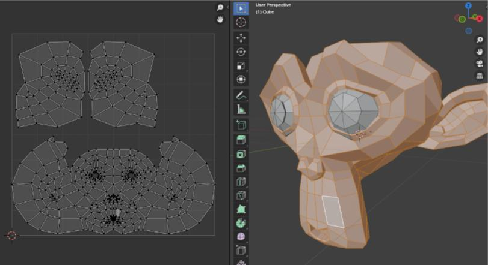

Tema 3: Texturas y mapas UV
Excelente! Ya sabemos en qué consiste un modelo 3D, pero un simple modelo grisáceo no es muy atractivo a la vista, no? Lo que necesitamos hacer ahora es aplicarle una textura para darle más personalidad
Que es el mapa UV:
Antes de aplicar una textura, hay que “desplegar” el modelo 3D en un plano 2D. Esto se hace con un Mapa UV, que es como recortar y abrir una caja para pintarla por fuera.
- Proyección de la textura:
Es el proceso de alinear la textura 2D sobre el modelo 3D. Se necesita un buen mapa UV para evitar que la imagen se estire o deforme. 
Cada cara va a tomar la imagen que se le superponga y la va a mostrar en su polígono correspondiente
Existen varios formatos de imagen que son válidos para usar como texturas, estos son los más comunes:
- PNG / JPG / DDS (para color)
- TIFF / EXR (para mapas de alta calidad)
- BMP, TGA, entre otros
üé® Texturas
La Malla (Mesh)
Las texturas le dan realismo y personalidad a un modelo 3D. No se trata solo del color, sino también de cómo se siente visualmente una superficie (rugosa, metálica, suave, etc.). Las más comunes son:
-
Color (Diffuse/Albedo)
Es la imagen base que define el color del objeto, como si fuera su "piel"
-
Normales (Normal Map)
Añaden detalles como arrugas o relieves sin necesidad de añadir o modificar los poligonos existentes. Simulan profundidad y textura
-
Texturizados (Materiales)
Combinan varias texturas (color, brillo, rugosidad, etc.) para definir completamente el aspecto de un objeto.